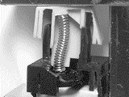
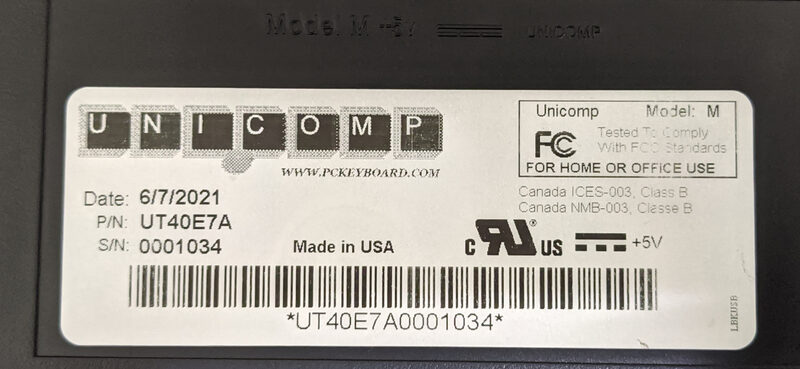
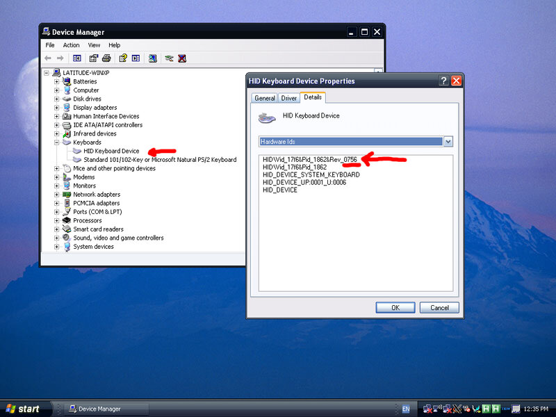
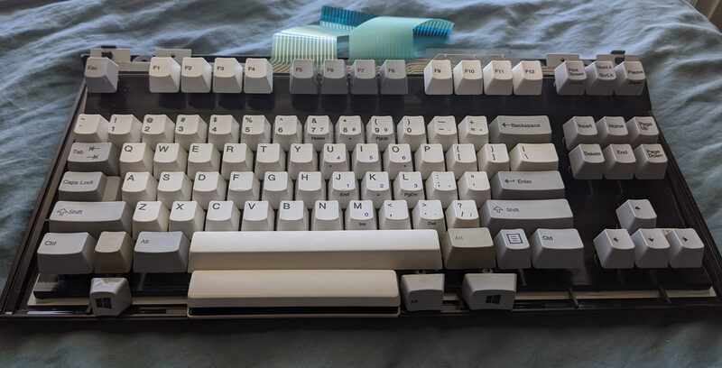

Unicomp Returns to Form:
Thoughts on the Unicomp Mini M Keyboard
14 June 2021 [Permanent link]
{kind=link}
First, Some History
Unicomp, based in Lexington, Kentucky, is a company with an unusual history. Its continued ability to exist is honestly something of a miracle to me, although I'm still quite happy that it seems to manage. They are the sole company that has been a source for IBM membrane-buckling-spring keyboards (and parts for them) for the past twenty-five years or so.
Buckling Springs and Why I Like Them
The reasons why the buckling spring mechanism is favored by some has been discussed to death already, but I'll try to do a short run-down on it here. Essentially, the buckling spring mechanism provides a hugely tactile and aggressively "clicky" typing experience. I have used many designs of keyboards with many variations of switches, but I always end up landing back on these buckling spring boards for the pure typing pleasure of them.
The switches work such that a spring is mounted on a pivoting "leg" atop a sensing mechanism (in this case a plastic membrane sheet, but in the past IBM also made a variant that used capacitive legs and sensors, termed the "Model F.") When pressure is placed on the top of the spring by the insertion of a key on top of it, it is applied in an 'unbalanced' manner, such that even at rest the spring is bent forward slightly. To illustrate this point, I'll refer to IBM's US patents US4118611A (Model F) and US4528431A (Model M), which provide some good drawings of the basic idea. Even more useful, however (in my opinion) are recordings of the mechanism in action, which provide a good substitute if you've not got a keyboard of your own in your hands to test with.
This animation comes from " Qwerters Clinic," a Japanese website dedicated to many kinds of keyboard designs and switches.
I highly recommend reading the linked page for more detailed explanation of how it works. The page is in English.
The buckling spring in the above illustration is actually of what's termed a "Brother buckling spring," which was made by Brother in Japan under license from IBM. While the exact switch is slightly different, the idea remains the same. Most notably, the switches are totally modular on Brother keyboards and can be individually removed and disassembled, unlike the only model M boards we got stateside which moulded all of the barrels into a single plastic plate which must be removed to completely access the mechanism.
Unlike many other key switches, even clicky ones, buckling springs create a feeling of a "snapping" on each key press, and the force required to press down the switch actually builds upon pressing, dropping off dramatically after actuation. In most clicky switches, the force required is relatively constant by comparison. The springs are quite noisy, but if you can get away with it, it's totally worth it, in my opinion.
Unicomp's Track Record
Over the last quarter century, many have observed that Unicomp hasn't responded much to demand changes, or indeed shown many attempts at expanding their business. Indeed, over the years, they have discontinued production of a fair number of their other products inherited from IBM, such as their Mighty Mouse keyboard with trackpoint, which was modelled after a thinkpad keyboard. Note that this was not a buckling spring board, but it was still a pretty nice small keyboard with a pointing stick, handy for navigation and for things like server racks.
For almost as long as they haven't made them, people have been requesting that Unicomp manufacture a numpad-less Model M, akin to IBM's "space-saving keyboard" (SSK) of old. Apparently, when Lexmark sold to Unicomp, they did not have the equipment for manufacturing this variant any longer, and the company was in no position to be able to afford to make new tooling (which is expensive).
Instead, they subsisted by manufacturing those boards which they did have the tooling for, i.e., their 101-key boards. Apparently, they also had the tooling to make boards with Windows keys. In any case, this served them well enough, but over the years I saw a significant number of people grumbling that they'd buy a Unicomp board "if only they made an SSK."
Fast-forwarding a decade or two, after many delays, Unicomp has pulled through. Their new "Mini M," as they call it, finally officially launched in February of this year (2021). Although it is unfortunately available in black only for the moment, it's a definite step in the right direction, and I bought one recently.
After using it for a couple weeks, I think I'm ready to start talking about what my impressions on it are. My experience is mostly positive, although I'll dive more into it in the following paragraphs. If you just want a "yes" or "no," though, then yes, I am happy that I bought it.
Diving Deeper into the Mini M
Initial Order and Delivery
I ordered the board around June sixth or seventh, and since I was a pre-orderer, I think that they gave my order priority. They claimed that on account of high demand, orderers should anticipate a four to six week lead time normally, but my board arrived on the ninth. It was only travelling from Kentucky to Indiana, but I was still impressed!
The sticker on the bottom of the board says that it was built on the seventh. I'm not sure if they build these things "to-order," or if they really are just struggling to keep up with the orders.
{kind=link}
At any rate, I'm happy that I pre-ordered sometime last year. I am equally happy that I waited until June to get the board, since there are reports that boards produced before sometime in April or May have a firmware issue where the 'Q' key (and possibly others) can stop registering after several hours plugged in. While Unicomp is offering to fix the boards of people who experience the issue, it's just something I don't have to deal with.
If you want to check your keyboard's firmware version, it's relatively simple to do it. On a Linux machine, you can do something like this:
$ lsusb |grep Unicomp Bus 003 Device 002: ID 17f6:1862 Unicomp, Inc. U AP1_4_87k_Kbrd_v7_56
The key information you're looking for is technically in what 'lsusb' calls the 'iProduct' field. On non-Linux systems, or on Linux systems without the 'lsusb' tool, you may have to find other means to get that information.
Just for my own amusement, I tried to find the same information on my only bare-metal Windows installation on a USB-compatible machine: a Dell Latitude D610 running XP SP3.
{kind=link}
The key here is the 'v7_56' part. From what I can gather, it seems that the boards with the 'Q' key issue are on v7_52 or some older version.
At the same time, though, I sort of wish that I'd been just a little bit earlier so I could have gotten a sub-1000 serial number and still dodged the issue. ;)
When I first pulled it out of the box, a couple keycaps were popped off, but they keyboard was wrapped in plastic and the box included instructions for replacing keys that come loose in shipping. Honestly, I re-seated the two or three keys by just pushing down on them, prior to even reading or looking at the papers (a friend of mine came over just as I was picking up the box, and he snatched the papers to read while I was looking at the board, so I didn't notice them for a good ten minutes).
The box was a simple, no-frills brown cardboard one, nearly identical to the one that Unicomp shipped me a full-size "classic" M case in a few years back, but shorter to accomodate the lack of a numeric pad on the product inside it. It had cardboard inserts to hold the keyboard steady during shipment, and it did a fine job.
Also in the box was a Monoprice six-foot USB A-to-A cable. It's funny to see a Monoprice branded cable in there, but it makes me think that either their prices are just that good, or maybe other industrial suppliers don't usually stock USB A-to-A cables, which are technically non-standard equipment with undefined behavior in the USB specification.
As an aside, I actually already had a USB A-to-A cable, funnily enough. I had gotten one for $1 from a bargain bin in a local computer store and used it to write third party firmware ( FlashFloppy) to a Gotek floppy drive emulator for use in my Amiga 500. So that's handy, since I have a backup if anything happens to this one. I sort of wish the cable was coiled, but obviously there's very little real world demand for that, especially in A-to-A form factor. It's just a "nice-to-have."
The last item in the box was a long length spacebar in the "bright white" color. I do not like the shortened spacebar and awkward alt key on this board (nor indeed do I like Windows keys at all, since they advertise a product I do not want to use outside of work), so while I still need to order a couple more keycaps to get everything matching, the spacebar was enough to get me most of the way there. I had to bend the stabilizer bar out a tiny bit to get it to swivel freely, since it was rubbing on the clips of the key itself. No big deal.
{kind=link}
Notice how the alt keys have green legends, akin to the PS/2 enhanced keyboards of old. That's a nice touch; I just wish they'd have kept the right windows key where it is on their Classic 104 and even their "New Model M" (slightly better picture here [PDF]), so I could cover it up without having to remap the right alt key in software and buy another full-width one with green legend to match the left alt key. I opened a support ticket, though, and Unicomp gave me instructions on how to order the exact caps I needed. So good on them, overall.
I didn't ask about remapping, since I think they probably won't just give me source code and instructions on how to reprogram their microcontroller, but as I plan to mention later in this write-up it appears that the controller does use flash memory and should therefore be reprogrammable, at least in theory. The trouble might be that I don't know if it'll be possible to read the old firmware off of it.
I know people complained about the other keyboard layout, too, so I guess Unicomp just can't win no matter what they do. Ideally I'd have no Windows keys there at all, mimicing the original SSK, but since I've got those spots I'm going to make one of them a compose key and another one legendless.
Remapping the Right Windows/Right Alt Keys (Linux-Specific)
The first method I tried to remap the right alt and windows keys works, but only in X11, and while it is keyboard-specific (does not mess up the mappings on other keyboards, such as the built-in laptop keyboard) it is hard to replicate easily so I'm just going to mention it briefly.
It uses 'xkbcomp' to compile new keyboard definitions on a per-keyboard basis to remap the keys. You basically have to find the keyboard's ID according to x (using xinput) and then add 'swap_ralt_rwin' to the 'xkb_symbols' list.
The second, better method works inside of X and in consoles, and so is preferable. It also works on a per-keyboard basis by using udev hwdb rules.
Long story short, you can create a file called '/etc/udev/hwdb.d/99-unicomp.hwdb' containing the following code. Create directories as necessary to create the file.
evdev:input:b0003v17F6p1862* KEYBOARD_KEY_700e6=rightmeta KEYBOARD_KEY_700e7=rightalt
then, as root, run:
# udevadm hwdb --update
On systemd systems, I have read that 'udevadm hwdb' is deprecated, but it still works on my Debian system which is using hwdb without the rest of systemd active.
It was kind of tricky to figure out how to do write this file, but if you are curious, try to look up 'hwdb keyboard remapping' or similar in a search engine.
BLUE LED'S, AAARGH
It seems that some time in the last year, Unicomp started using blue LED's in its keyboards. This is bad, because they're too bright, because blue keeps you up at night, and because it's utterly inauthentic for a keyboard with a 1980's design to have blue LED's, when blue LED's weren't even created until the late 90's or early 2000's. Green or amber would both have been preferable choices.
To make things worse, normally I'd just desolder them, buuut this time they're tiny surface mount things mounted directly on the keyboard membrane. So that's not good.
I plan to do something like I did when I put a PS/2 model M controller board inside a terminal M, where I soldered a header to the board's pins that connected to the LED's on the matrix of the PS/2 keyboard matrix and then ran a cable to a perfboard I slapped some LED's on. I think that should work fine here, too. I'll probably update this page when I finally do it.
I might write more here soon, mentioning another little issue I've noticed where the controller board gets pretty warm, but I'll save it for later. I've been writing this for entirely too long now.
Addressing Some Common Complaints People Make about Unicomp & Buckling Spring keyboards
(Not specifically the Mini M)
These are some common complaints I read about Unicomp keyboards, and sometimes about buckling springs or mechanical keyboards as a whole. I'm using this as a place to address the complaints and give my two cents on them. I'm not trying to defend any particular person or group here, and I could definitely be wrong about some things (like legend printing techniques). So if you spot anything wrong, You could make an issue on this site's issue tracker (currently on GitHub).
Poorly Printed Key Legends
I can't say much here, except that the legends on my board look pretty good to me. Sure, if I A/B it with an early 90's IBM M, I might say that the positioning on the "pause" and "end" key printing is a bit low, but that's only when comparing it directly to another keyboard. In practice, I don't spend most of my time looking at my keyboard, so I honestly don't notice or care.
All the rest of the keys on the board, however, look absolutely fine to my eyes, and I only noticed 'Pause' and 'End' when I went looking for them. I find it easy to forget about again since it really does not impact my typing experience.
The other complaint I've seen lodged against Unicomp seems to be an older one, but there were reports of what sounds like "overspray," basically blurry printing. I definitely do not see blurry printing on this board, though. It looks thick and crisp and solid. So either I got really lucky, or they've corrected this issue.
Noisy
Unicomp's detractors tend to complain about the noise of the boards, but in my personal opinion, this is totally missing the point of a buckling spring keyboard.
While it is certainly valid to not want a keyboard on account of the noise it makes, If you need a quiet board, and you really need a quiet board, I think you should maybe get a rubber-dome board. Maybe a scissor switch, laptop-style one. Those are pretty nice feeling and they make far, far less noise.
Any mechanical switch or buckling spring board will inherently be noisier than that, although buckling springs are admittedly especially loud. Even my Apple Extended Keyboard, which is a tactile, non-clicky design that I love, is louder by far than a rubber dome Sun keyboard or any non-gaming offering from Logitech. So again, my opinion is that if you don't like the noise, they simply aren't for you. Get a scissor switch keyboard, or maybe even try a Topre board. I've not used a Topre, but apparently they feel extremely nice, and they use a variant on the rubber dome design.
No backlighting
My personal reaction whenever i see this complaint is pretty straightforward. I think that if you're on your keyboard a lot, and you've been using keyboards for a few years, you probably know how to touch-type. Even in darkness, I can typically find keys with ease and without looking down, at least if the keyboard uses a standardized or mostly-standardized layout. Every common (non-122-key) Model M I've ever seen has had pretty much the standard "IBM Enhanced Keyboard" layout, so I don't really get why the lack of backlighting is an issue for so many people.
The only ways I can think of to justify "needing" backlighting are:
- You're new to typing and are in the dark a lot,
- You're on a strange keyboard layout and haven't adapted to it yet, or
- You like the aesthetic to such an extent that you won't buy a keyboard if it hasn't got it.
Additionally, it's worth noting that the buckling spring mechanism itself contains no provisions for backlighting, on account of having been designed between the 1970's (first patent) and the mid-80's, and implementing backlighting would be a major challenge, if not completely impossible.
The only way I can think of to implement backlighting involves, at a minimum, a complete redesign of the keycap to use double-shot injection moulding (expensive) or clear plastic with paint that will eventually wear off (less expensive, but of subpar quality in my opinion). Then, you'd have to put over one hundred surface-mounted LED's on each keyboard's membrane, lined up so that they inhabit what I'd guess is a one or two millimeter gap between the top of the rocking pivot/hammer assembly and the upper edge of the barrel plate. And that's all assuming that the key stem itself won't collide with the LED when a key is pressed! It's really not a design suitable for backlighting, but as I've said, if you can touch type I don't really think it's a huge issue.
No black keys with white legends
This one is totally valid as a criticism, although I can see both sides of this story, too.
Unicomp's reasoning for not offering white legends on black keys is pretty reasonable, in my opinion. They cite that the printing process they use on their boards is dye sublimation, which only works by adding pigments to light key colors (additive printing). Imagine trying to print on black paper with a normal consumer printer (which typically has only cyan, magenta, yellow, and black inks). That's the challenge that they are facing.
The way that black keyboards usually have legends added is with either lasering (the ability to print white on black with a laser is relatively new, though), pad printing, double-shot injection moulding, or possibly something like silk screening. Pad printing is basically just stamping paint onto the black plastic. It works, but it will wear down with heavy use, and requires pad printing machinery, which can be expensive to purchase and maintain and is less permanent than dye sublimation. I used to work at a factory with pad printing machines (although they were not designed for keyboard printing and had pads far too small to print all keyboard keys at once), so I might have a somewhat better understanding than some do, but typically you can even scrape pad printing off with a plastic knife. The legends absolutely would not hold up in the long run like other Model M's legends have.
Pad printing was used on the old Model M13, the only Model M with legends that was ever offered in black to my knowledge. Many have faded legends by now. I do not think pad printing is as common these days, having been supplanted by other technologies, but I cannot be sure of that. It is sometimes hard to telll by visual inspection alone. Edgar Matias (who actually manufactures keyboards) claims that pad printing is not very common anymore.
I am not as familiar with silk screening, but I see It is something I think I need to research more. Some people on the same thread I linked above claim that silk screening is not viable on keyboards, so I don't really know what to think there.
The alternative would be dye sublimating all but the legends of white keys in black, which I'd imagine would be time consuming and deliver non-uniform results across the keys.
With that said, none of that is a reason Unicomp should actually be incapable of doing pad printing; if the demand is there (and it might well be; people like black keyboards), I think many could still buy boards, even understanding those limitations of the process. I don't think I'd buy one personally, though. If I could have, I'd have gotten my mini M in beige plastic to match my collection of IBM keyboards. :)